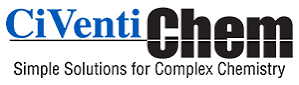

AI Roadmap, BriefA quick view of what each phase delivers and what it unlocks next. Full scope, screenshots, and sizing detail available once the project is approved in principle.
| Phase | Features | Outcome |
|---|---|---|
| 00Confidentiality & Engagement Setup |
|
Signed, legally binding agreement to start work, with the local-only requirement in writing. |
| 01Infra Readiness & Local Deployment |
|
Tracker running independently on CiVentiChem's own hardware, operated by their own team. |
| 02Archive Audit, Prep & Capacity Planning |
|
A validated, structured dataset plus a clear hardware/storage number to plan and budget against. |
| 03Local AI Knowledge Layer |
|
A working, fully offline AI assistant that answers "how did we solve this before" from CiVentiChem's own history. |
Standing constraint across all four phases: everything runs on hardware CiVentiChem owns and controls. No cloud database, no third-party LLM API, no telemetry.